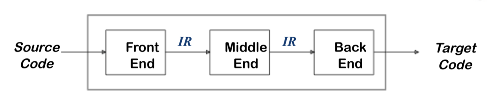
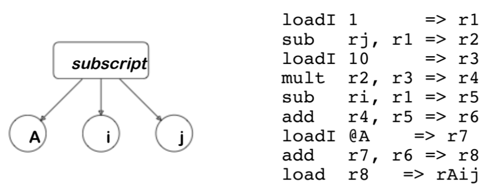
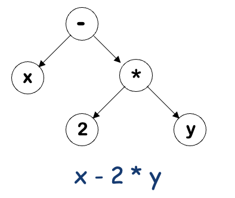
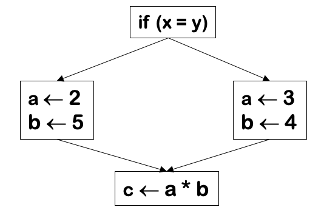

Rappresentazione Intermedia
La parte di front-end produce una rappresentazione intermedia, il middle-end trasforma la rappresentazione intermedia prodotta dal front-end in una rappresentazione intermedia equivalente, attraverso diverse passate ognuna delle quali applica tecniche di ottimizzazione, che funziona in modo più efficiente e, infine, il back-end trasforma la rappresentazione intermedia in codice nativo eseguibile dal processore.

Le decisioni nella progettazione IR influenzano la velocità e l'efficienza del compilatore, vediamo alcuni importanti proprietà dell'IR:
- Facilità di generazione: l'IR deve essere semplice da produrre a partire dal codice sorgente durante il front end.
- Facilità di manipolazione: deve essere facile analizzare e trasformare l'IR durante il middle end.
- Dimensione delle procedure: l'IR non dovrebbe essere troppo grande, perché procedure molto ampie possono richiedere molta memoria e rallentare le analisi.
- Libertà di espressione: l'IR deve essere abbastanza flessibile da rappresentare tutti i costrutti del linguaggio sorgente senza perdita di informazioni.
- Livello di astrazione: l'IR deve essere abbastanza astratto da essere indipendente dall'architettura hardware, ma non così astratto da rendere difficile la generazione di codice macchina nella fase di back end.
Tipi di IR
Le rappresentazioni intermedie si dividono in tre principali categorie:
- Strutturali: questo tipo di IR è rappresentato in modo grafico, come grafi o alberi, che catturano la struttura logica e sintattica del programma, queste tendono a occupare molta memoria, specialmente per programmi complessi. Esempi: AST(Abstract Syntax Tree), DAG (Directed Acyclic Graph)
- Lineari: questo tipo di IR rappresenta il programma come una sequenza di istruzioni, simile a un linguaggio assembly o pseudo-codice per una macchina astratta, queste sono rappresentate con strutture dati più leggere, rendendo più facile lavorare con grandi programmi. Poiché le istruzioni sono disposte in sequenza, è più semplice riorganizzarle per ottimizzazioni come l'ordinamento dei cicli o la rimozione del codice morto. Esempio: TAC (Three-Address Code), Bytecode.
- Ibridi: combina caratteristiche delle IR strutturali e lineari per ottenere i vantaggi di entrambe, di solito, unisce una rappresentazione grafica (per il controllo del flusso) con istruzioni lineari per le operazioni locali, è meno grande delle IR strutturali e più potente delle IR lineari per analisi complesse. Esempi: SSA (Static Single Assignment), Control-Flow Graph con TAC.
Livello di astrazione
Il livello di astrazione di una IR riguarda il grado di dettaglio che la rappresentazione intermedia fornisce sul programma, abbiamo due casi differenti rappresentazioni per un accesso a un array:
- ad alto livello (strutturale) -> AST
- a basso livello (lineare) -> Linear Code

Non sempre le IR strutturali vengono utilizzati per l'alto livello e le IR lineari per il basso livello.
-
Abstract Syntax Tree - AST: è una rappresentazione ad albero della struttura sintattica di un programma, ma con un livello di astrazione maggiore rispetto al parse tree, in particolare, l'AST elimina nodi non essenziali e rappresenta solo le informazioni necessarie per comprendere la semantica del programma. Sebbene l'AST sia naturalmente una struttura gerarchica, può essere linearizzato in forme come notazione pre-fissa (- * 2 y x) o post-fissa (x 2 y * -) per semplificare alcune operazioni. 
-
Direct Acyclic Graph - DAG: è una rappresentazione grafica utilizzata per catturare le dipendenze tra operazioni o espressioni in un programma, è simile a un albero, ma con la differenza che consente la condivisione esplicita dei nodi quando ci sono ridondanze.

-
Stack Machine Code: è una rappresentazione del codice che utilizza una macchina a pila per eseguire operazioni aritmetiche e logiche, in essa, tutti i calcoli avvengono manipolando una struttura dati a stack, dove gli operandi sono spinti (push) o estratti (pop) dalla pila. Questo approccio è semplice e compatto, ed è utilizzato da linguaggi e ambienti come Java (con il bytecode della JVM). Ad esempio
x - 2 * yla pila diventa:- push x:
[x] - push 2:
[x, 2] - push y:
[x, 2, y] - multipl:
[x, (2 * y)] - subtract:
[(x - (2 * y))](risultato finale)
- push x:
-
Three Addres Code - TAC: è una rappresentazione intermedia del programma che utilizza istruzioni con al massimo tre operandi, è un formato comune nei compilatori perché bilancia semplicità e vicinanza al codice macchina reale. Ogni istruzione del TAC ha questa forma generale:
x <- y op z, ad esempioz <- x - 2 * ydiventat <- 2 * y; z <- x - t. Diverse varianti di TAC:- Tripla: ogni istruzione è rappresentata come una tupla con tre campi:
(operatore, operando1, operando2). - Quadrupla: simile alla tripla, ma ogni istruzione esplicita anche il risultato.
- Record lineare: usa una sequenza di istruzioni simile a un linguaggio assembly, con nomi temporanei espliciti.
- Tripla: ogni istruzione è rappresentata come una tupla con tre campi:
-
Control-Flow Graph: è una rappresentazione grafica utilizzata nei compilatori per modellare il flusso di controllo all'interno di un programma, in particolare in un singolo procedimento (funzione o metodo), questa rappresentazione è cruciale per analizzare e ottimizzare il codice, poiché mostra come le diverse istruzioni o blocchi di codice sono collegati tra loro, indicando come il controllo (ovvero l'esecuzione) si sposta da un'istruzione all'altra. Struttura:
- Nodi (Basic Blocks): ogni nodo del grafo rappresenta un basic block, che è una sequenza di istruzioni che viene eseguita una volta iniziata, senza interruzioni. Un blocco base non può contenere istruzioni con salti (come
if,goto,return) o biforcazioni (comeif-else), perché questi determinano cambiamenti nel flusso di controllo. - Archi: gli archi nel grafo rappresentano il flusso di controllo tra i blocchi, indicano come l'esecuzione passa da un blocco all'altro.
- Se, per esempio, il codice contiene un'istruzione
ifche determina un salto, allora le istruzioni precedenti e quelle successive alla condizioneifsaranno in blocchi base separati, perché l'esecuzione può "saltare" da un punto all'altro, cambiando il flusso di controllo.

- Nodi (Basic Blocks): ogni nodo del grafo rappresenta un basic block, che è una sequenza di istruzioni che viene eseguita una volta iniziata, senza interruzioni. Un blocco base non può contenere istruzioni con salti (come
-
Static Single Assignment - SSA: è una rappresentazione intermedia utilizzata nei compilatori che semplifica l'analisi e l'ottimizzazione del codice, l'idea principale di SSA è che ogni variabile o nome venga definito esattamente una volta nel programma, evitando ri-assegnazioni multiple. Per ottenere la SSA, quando una variabile è assegnata più di una volta (ad esempio, in un ciclo o in una condizione
if-else), si crea una nuova versione della variabile ogni volta che viene riassegnata, in questo modo, ogni "versione" della variabile ha una definizione unica.
if (condizione) {
x = 1;
} else {
x = 2;
}
y = x + 3;
//In SSA il codice diventa
if (condizione) {
x1 = 1;
} else {
x2 = 2;
}
x3 = phi(x1, x2); // phi funzione per scegliere tra x1 e x2
y = x3 + 3;
Usare rappresentazioni multiple
L'idea di utilizzare più rappresentazioni intermedie (IR) in un compilatore consiste nel passare gradualmente da rappresentazioni di alto livello, più astratte, a rappresentazioni di basso livello, più vicine al codice macchina. Ogni rappresentazione intermedia è progettata per essere ottimale per un determinato tipo di analisi o ottimizzazione, migliorando così l'efficienza e la qualità del codice generato. Il compilatore Open64 utilizza una rappresentazione intermedia chiamata WHIRL, che comprende 5 diversi livelli di IR, ciascuno con un diverso grado di astrazione e dettagli.
Modelli di Memoria
I modelli di memoria definiscono come il compilatore gestisce i dati durante l'esecuzione del programma, ovvero se questi dati vengono memorizzati principalmente in registri (veloci ma limitati) o in memoria principale (lenta ma abbondante). Esistono due principali modelli di memoria, ciascuno con vantaggi e svantaggi:
- Register-to-register model: il compilatore assume che tutti i valori che possono essere legalmente archiviati in un registro vengano effettivamente messi nei registri. Durante le prime fasi di compilazione, il compilatore non considera il numero limitato di registri della macchina reale, spetta al back-end del compilatore gestire il mapping effettivo ai registri fisici della macchina. Quando il numero di registri richiesti eccede quello disponibile, il back-end deve inserire istruzioni di load e store per scaricare temporaneamente i valori in memoria.
- Memory-to-memory model: il compilatore assume che tutti i valori siano archiviati nella memoria principale, salvo quelli che vengono promossi temporaneamente ai registri subito prima di essere utilizzati. I dati vengono caricati nei registri solo quando strettamente necessari per un'operazione e poi scritti nuovamente in memoria. Il back-end del compilatore può eliminare i caricamenti e le scritture ridondanti per ottimizzare il codice.
- Uso nei Compilatori RISC: I compilatori per architetture RISC (Reduced Instruction Set Computer) di solito adottano il register-to-register model.
Rappresentare il codice è solo una parte di una rappresentazione intermedia (IR), ci sono altri componenti necessari:
- Tabella dei simboli
- Tabella delle costanti
- Rappresentazione, tipo
- Classe di memorizzazione, offset
- Mappa della memoria
- Layout complessivo della memoria
- Informazioni sulle sovrapposizioni
- Assegnazioni di registri virtuali
Tabelle dei simboli
Le tabelle dei simboli sono strutture dati fondamentali in un compilatore, servono per memorizzare e gestire informazioni sui simboli del programma (es. variabili, funzioni, tipi), sono utilizzate per risolvere riferimenti e applicare regole di visibilità e scoping. Un metodo classico per costruire una tabella dei simboli è utilizzare l'hashing, in questo approccio:
- Indice basato su una funzione hash:
- La funzione hash calcola una posizione per ogni simbolo basandosi sul suo nome, questo riduce i tempi di ricerca rispetto a metodi lineari (es. lista o array).
- Gestione delle collisioni:
- Se due simboli finiscono nello stesso indice (collisione), si usa una tecnica di gestione come il chaining (liste concatenate).
Tabelle dei Simboli Senza Hash
Le tabelle dei simboli senza hash sono un'alternativa, questo approccio nasce per evitare i problemi legati alle collisioni nella funzione hash, che possono degradare le prestazioni fino a una ricerca lineare nel caso peggiore. "Perfect Hash": alcuni autori propongono di utilizzare funzioni di hashing perfette, ovvero funzioni che non generano collisioni, tuttavia, creare una funzione di hash perfetta per tutti i possibili simboli (soprattutto in compilatori generali) è complesso e poco pratico.
Un approccio alternativo è quello di utilizzare concetti derivati dalla teoria degli automi per costruire tabelle dei simboli che evitano completamente le collisioni e garantiscano prestazioni prevedibili e uniformi, indipendentemente dalla quantità e dalla distribuzione dei simboli.
Una proposta alternativa per eliminare l'uso delle funzioni hash nelle tabelle dei simboli è il metodo di multiset discrimination sviluppato da Paige & Cai. Questo si basa sull'ordinamento offline dello spazio dei nomi e sull'assegnazione di indici univoci, sfruttando tecniche derivate dagli automi deterministici a stati finiti (DFA). Come funziona il metodo Paige & Cai:
- Ordinamento Offline dello Spazio dei Nomi:
- Prima di elaborare il codice sorgente, lo spazio dei nomi (ossia i possibili identificatori, parole chiave, ecc.) viene ordinato in modo deterministico.
- Ad ogni nome, nello spazio dei nomi, viene assegnato un indice univoco basato su questo ordinamento.
- Sostituzione dei Nomi con Indici:
- Durante l'elaborazione dell'input, i nomi nel codice sorgente vengono sostituiti dai loro indici predefiniti, questo elimina la necessità di calcolare una funzione hash dinamica per ogni nome, semplificando l'accesso e la gestione.
- Multiset Discrimination:
- Dopo la sostituzione con gli indici, i simboli possono essere trattati come un insieme ordinato di interi (il multiset), questo rende le operazioni di confronto e ricerca molto più rapide, poiché si lavora su numeri interi anziché stringhe.
Un ulteriore miglioramento al metodo consiste nell'utilizzo di tecniche basate sui DFA per implementare una sostituzione lineare dei simboli senza ricorrere all'hashing. Costruzione del DFA:
- I nomi (parole chiave o identificatori) vengono rappresentati come un'espressione regolare composta del tipo:
r1 | r2 | r3 | ... | rk
// Dove ogni `ri` è un nome nello spazio dei nomi.
- Questa espressione regolare viene convertita in un DFA aciclico, poiché le liste di parole chiave o nomi non hanno cicli.
La costruzione incrementale di un automa deterministico a stati finiti aciclico è una tecnica che consente di aggiungere nuove parole all'automa in modo dinamico, senza doverlo ricostruire completamente, questo approccio è particolarmente utile per gestire piccoli insiemi di chiavi (ad esempio, identificatori o parole chiave all'interno di una procedura).
Durante l'aggiunta di una parola, il DFA richiede un accesso in memoria per ogni carattere nella parola, fino a raggiungere lo stato di errore. Se il DFA diventa molto grande, i costi di accesso alla memoria per ogni carattere possono aumentare significativamente, tuttavia, per piccoli insiemi di chiavi (come i nomi in una procedura), questo problema non è rilevante.
Ottimizzazioni per ridurre costi e dimensioni:
- Stato esplicito sull'ultimo nodo:
- L'ultimo stato di ogni percorso del DFA può essere reso esplicito solo quando il percorso viene allungato.
- Vantaggi:
- Riduzione sostanziale dei costi in memoria, poiché non si crea immediatamente lo stato finale.
- La struttura è più compatta fino a quando non è necessario aggiungere nuove parole.
- Granularità vs. Dimensione degli stati:
- È possibile regolare il livello di dettaglio con cui rappresentare ogni stato per trovare un equilibrio tra il costo di rappresentazione e l'efficienza.
- Ad esempio, rappresentazioni più granulari degli stati possono aumentare le prestazioni, ma a costo di una maggiore memoria.
- Gestione separata della capitalizzazione:
- La capitalizzazione delle lettere (es.
Foovsfoo) può essere codificata separatamente usando stringhe di bit legate agli stati finali. - Vantaggi:
- Evita di duplicare interi percorsi nel DFA per distinguere parole con lettere maiuscole e minuscole.
- Permette un riconoscimento più efficiente.
- La capitalizzazione delle lettere (es.
La procedura di astrazione
Il compilatore deve fornire, per ogni costrutto del linguaggio di programmazione, un implementazione (o almeno una strategia). Questi costrutti cadono in due principali categorie:
- Dichiarazioni individuali
- Procedure
Il compilatore deve implementare ogni costrutto del linguaggio, concentrandosi soprattutto sulle procedure, poiché forniscono il contesto necessario per gestire le dichiarazioni.
Le procedure sono un meccanismo fondamentale nei linguaggi di programmazione che permette di raggruppare un insieme di istruzioni in un blocco riutilizzabile e con un nome specifico = (funzioni).
Le procedure sono fondamentali per:
- Nascondere le informazioni (information hiding)
- Creare spazi dei nomi separati
- Definire interfacce uniformi
Poiché l'hardware non supporta direttamente queste astrazioni, il compilatore deve implementarle in modo efficiente, deve:
- Decidere dove collocare i valori e come calcolarli.
- Gestire il comportamento tra tempo di compilazione e tempo di esecuzione.
- Integrare il codice con altri programmi e sistemi operativi.
Problemi chiave includono:
- Allocazione dello spazio di memoria e associazione dei nomi agli indirizzi.
- Creazione di codice per accedere a valori noti e non noti a tempo di compilazione.
- Garantire efficienza e compatibilità.
In sintesi, il compilatore deve produrre codice che combini correttamente tutte le procedure per formare un programma funzionante ed efficiente.
Compilazione separata
Le procedure permettono di sfruttare la compilazione separata, un meccanismo fondamentale per costruire programmi complessi e collaborativi. Vantaggi della compilazione separata:
- Programmi non banali: permette di gestire progetti grandi e modulari;
- Tempi di compilazione ridotti: ogni file o modulo può essere compilato separatamente, evitando di ricompilare l'intero programma a ogni modifica;
- Collaborazione tra programmatori: ogni sviluppatore può lavorare su parti diverse del codice in modo indipendente;
- Procedure indipendenti: ogni procedura può essere compilata singolarmente e integrata successivamente;
La convenzione di collegamento delle procedure è un insieme di regole che definisce come le procedure (o funzioni) interagiscono con l'ambiente di runtime di un programma durante una chiamata:
- Garantisce che ogni procedura erediti un ambiente di runtime valido - quando una procedura viene chiamata, deve poter accedere a tutte le informazioni necessarie per funzionare correttamente, come i parametri di input, le variabili locali e lo stato generale del programma. La convenzione di collegamento si assicura che l'ambiente chiamante prepari tutto il necessario (parametri, spazio sullo stack, ecc.) prima di trasferire il controllo alla procedura chiamata;
- Assicura che al termine della procedura, l'ambiente chiamante venga ripristinato correttamente - dopo che la procedura termina la sua esecuzione, il controllo deve tornare al punto in cui è stata chiamata, con l'ambiente originale intatto;
- Il compilatore genera il codice per gestire questi aspetti in base alle convenzioni del sistema;
Supporto limitato dell'hardware: L'hardware fornisce solo strumenti di base, come bit, byte, numeri interi e trasferimento di controllo (chiamata e ritorno). Tuttavia, non supporta direttamente:
- Meccanismi di chiamata e ritorno completi (ad esempio il salvataggio del contesto);
- Interfacce tra procedure;
- Spazi dei nomi e ambiti nidificati;
Chi fornisce queste funzionalità? Queste astrazioni sono implementate tramite:
- Compilatore: genera il codice che gestisce la chiamata e il ritorno, spazi dei nomi e contesti;
- Sistema di esecuzione: gestisce l’ambiente di runtime;
- Linker e caricatore: collegano procedure compilate separatamente e le rendono eseguibili;
- Sistema operativo: supporta il caricamento del programma e la gestione della memoria;
La procedura come astrazione di controllo
Le procedure, come concetto astratto, ci permettono di definire un flusso di controllo ben preciso all'interno di un programma:
- Quando una procedura viene chiamata, l'esecuzione si sposta dal punto della chiamata (il sito di invocazione) all'inizio della procedura.
- Durante l'esecuzione, la procedura può lavorare con parametri passati dall'esterno e con variabili locali definite al suo interno.
- Una volta terminata, la procedura restituisce il controllo al punto immediatamente successivo alla chiamata. Questa semplicità apparente nasconde però delle sfide: per far funzionare tutto questo, il compilatore deve generare del codice che si occupi di gestire alcuni aspetti fondamentali in modo automatico. Cosa deve fare il compilatore?
- Salvare e ripristinare l'indirizzo di ritorno
Quando la procedura viene chiamata, il compilatore deve salvare da qualche parte l'indirizzo del punto successivo alla chiamata, così da sapere dove tornare quando la procedura termina. Senza questo passaggio, il programma non saprebbe come riprendere l’esecuzione. - Gestire i parametri
I valori o riferimenti passati alla procedura (chiamati parametri effettivi) devono essere mappati ai parametri utilizzati all'interno della procedura (chiamati parametri formali). Questa corrispondenza garantisce che la procedura lavori con i dati giusti. - Creare spazio per le variabili locali
Ogni procedura può avere delle variabili locali, cioè variabili che esistono solo mentre la procedura è in esecuzione. Il compilatore deve riservare uno spazio in memoria per queste variabili, che deve essere creato all’avvio della procedura e liberato quando questa termina.
Il vero problema si presenta quando la procedura è ricorsiva, cioè quando può chiamare sé stessa prima di aver completato l'esecuzione precedente, in casi come questo, ogni chiamata deve mantenere il proprio stato indipendente.
La soluzione: la pila di attivazione Per risolvere il problema, il sistema utilizza una pila di attivazione:
- Quando una procedura viene chiamata, si aggiunge (push) in cima alla pila un blocco di memoria che contiene:
- L’indirizzo di ritorno.
- I parametri della procedura.
- Lo spazio per le variabili locali.
- Quando la procedura termina, il blocco in cima alla pila viene rimosso (pop) e il controllo ritorna all’indirizzo salvato. Questa strategia garantisce che ogni chiamata, inclusa la ricorsione, abbia il proprio spazio separato per lavorare, evitando conflitti tra chiamate diverse.

La procedura come spazio dei nomi
Quando parliamo di una procedura come "spazio dei nomi", intendiamo che ogni procedura ha una propria area isolata per dichiarare e gestire nomi (variabili, costanti, funzioni). Questo concetto è regolato dalle regole dell'ambito lessicale, che definiscono come e dove i nomi (variabili o funzioni) possono essere utilizzati nel codice.
- Una procedura definisce un'area in cui i nomi dichiarati sono validi e accessibili. Fuori da quella procedura, i nomi locali non sono visibili né utilizzabili (scope).
- Se un nome è dichiarato localmente in una procedura, "oscura" qualsiasi altro nome con lo stesso identificatore dichiarato al di fuori della procedura.
- Una variabile dichiarata localmente a una procedura non è accessibile al di fuori di essa.
L'ambito (scope) lessicale è una convenzione che stabilisce le regole per determinare quale "versione" di una variabile è utilizzabile in una parte del codice, basandosi sulla posizione della variabile nel codice sorgente. È definito al momento della compilazione, non a runtime.
Il compilatore gestisce lo spazio dei nomi e l'ambito lessicale tramite tabelle dei simboli, strutture dati che memorizzano informazioni sui nomi dichiarati e sul loro contesto. Interfaccia delle tabelle dei simboli:
insert(name, level): aggiunge un nuovo record per il nome dichiarato, indicando il livello (scope) in cui è valido.- Es: dichiarare
int xa livello locale aggiungexalla tabella per lo scope attuale.
- Es: dichiarare
lookup(name, level): cerca il nome nel livello specificato o negli scope superiori (se permesso), restituendo un puntatore o indice alla dichiarazione corrispondente.- Es: cercare
xin una procedura verifica se è dichiarata localmente o globalmente.
- Es: cercare
delete(level): rimuove tutti i nomi associati a un livello quando si esce da quello scope.- Es: quando una funzione termina, elimina tutte le variabili locali dalla tabella. Sono stati proposti molti schemi di implementazione.
La procedura come interfaccia esterna
Le procedure fungono da punto di interfaccia per l’interazione tra programmi, sistema operativo e utenti. Esecuzione di un programma: da dove inizia?
- Ogni programma ha un punto di inizio, come
main()in C o il corpo principale in Python, il programmatore specifica questo punto, e il sistema operativo lo usa per avviare l'esecuzione.
Le variabili sono allocate in modo diverso a seconda della loro durata e visibilità.
- Variabili automatiche e locali:
- Memorizzate nel record di attivazione della procedura (stack frame) o in registri della CPU.
- Durata limitata: esistono solo durante l’esecuzione della procedura.
- Variabili statiche:
- Durata: persistono per tutta l’esecuzione del programma.
- Ambito della procedura: associate al nome della procedura in cui sono dichiarate.
- Ambito del file: associate al file in cui sono dichiarate (es:
static int x;in C). - Esistono in aree di memoria pre-allocate.
- Variabili globali:
- Visibili a tutto il programma, memorizzate in aree dedicate della memoria globale.
- Durata: l'intera esecuzione del programma.
La memoria di un programma è divisa in sezioni, ognuna con un ruolo specifico:
- Codice: contiene le istruzioni del programma, con dimensioni note a tempo di compilazione.
- Dati statici e globali: aree pre-allocate per variabili globali e statiche, note anch'esse a tempo di compilazione.
- Stack: utilizzato per memorizzare i record di attivazione (stack frame) delle procedure.
- Heap: utilizzato per allocazioni dinamiche (es:
mallocin C).
Quando una procedura viene chiamata, il compilatore alloca un record di attivazione (AR), che contiene:
- Variabili locali: allocate nello stack.
- Parametri formali: passati alla procedura.
- Indirizzo di ritorno: per tornare al chiamante.
- Valori di controllo: come lo stato dei registri. Ricorsione:
- Per ogni invocazione ricorsiva, viene creato un nuovo record di attivazione.
- Questo permette a ciascuna invocazione di mantenere il proprio insieme di variabili locali.
Traduzione dei nomi locali Il compilatore rappresenta ogni variabile come una coppia di coordinate statiche:
<level, offset>:level: livello di annidamento lessicale della procedura.offset: posizione unica della variabile all'interno del livello. Esempio: consideriamo il seguente codice
int x; // Variabile globale
void f() {
int y; // Livello 1, offset 0
void g() {
int z; // Livello 2, offset 0
}
}
x(globale): non halevel, vive nell'area globale.y(inf):level = 1,offset = 0.z(ing):level = 2,offset = 0.
Generazione del codice
- In fase di compilazione:
- Il compilatore assegna un
levele unoffseta ogni variabile e memorizza queste informazioni nella tabella dei simboli, questi dati vengono utilizzati per calcolare gli indirizzi di memoria e generare istruzioni che accedono alle variabili in fase di esecuzione.
- Il compilatore assegna un
- In fase di esecuzione:
- Il codice generato usa le coordinate statiche per accedere alla posizione corretta della variabile nello stack o nella memoria globale.
Stabilire l'indirizzabilità
Creazione di indirizzi di base
Il compilatore deve sapere come trovare l'indirizzo in memoria delle variabili a seconda del loro tipo (locali, statiche, non locali):
- Variabili Locali:
- Vengono tradotte in coordinate statiche:
<level, offset>. - Il record di attivazione (AR) contiene un puntatore, chiamato ARP (Activation Record Pointer), che identifica il record della procedura corrente.
- L’indirizzo della variabile è ottenuto calcolando: $\text{Indirizzo Variabile} = \text{ARP} + \text{offset}$
- Vengono tradotte in coordinate statiche:
- Variabili Statiche: per queste variabili, il compilatore crea etichette simboliche (es. &_fee per una variabile chiamata fee), l'indirizzo è risolto una volta in fase di compilazione ed è fisso.
- Variabili non Locali: quando una variabile appartiene a un ambito esterno rispetto alla procedura corrente, il compilatore:
- traduce il nome in coordinate statiche.
- trova l'ARP appropriato per il livello di annidamento richiesto.
- calcola l'indirizzo come: $\text{ARP}_{target} + \text{offset}$.
Accesso alle variabili non locali
- Collegamenti di accesso - access link
- Ogni AR contiene un puntatore all’AR dell’antenato lessicale immediato.
- L’antenato lessicale è la procedura che "contiene" la procedura corrente, questo non è necessariamente il chiamante diretto. Come funziona:
- Ogni AR contiene un puntatore all’AR dell’antenato lessicale immediato.
- Se una variabile non locale è al livello
je la procedura corrente è al livellok, il compilatore segue i collegamenti di accesso per risalire nella catena degli AR. - Il costo dell'accesso dipende dalla distanza lessicale (quanto è lontano il livello
jdak). Esempio:
void outer() {
int x; // livello 1
void inner() {
void nested() {
// Accesso a x (livello 1) da nested (livello 3)
}
}
}
nested()si trova al livello 3 e deve risalire due livelli di collegamenti di accesso per raggiungerex(al livello 1). Pro: funziona sempre, anche se gli AR sopravvivono alla procedura. Contro: il costo cresce con la distanza lessicale.
- Display
- Usa un array globale chiamato display, che memorizza puntatori agli AR per ogni livello lessicale.
- L’indirizzo di una variabile non locale è trovato direttamente accedendo al display: $\text{Indirizzo Variabile} = \text{Display[j]} + \text{offset}$.
- Il costo dell'accesso è costante, indipendentemente dalla distanza lessicale. Esempio:
void outer() {
int x; // livello 1
void inner() {
void nested() {
// Accesso a x (livello 1) da nested (livello 3)
}
}
}
nested()accede axal livello 1.Display[1]contiene l’ARP perouter.- L’indirizzo di
xè calcolato conDisplay[1] + offset. Pro: accesso rapido e costante. Contro: richiede aggiornamenti al display durante ogni chiamata e ritorno, e utilizza un registro aggiuntivo.
Collegamenti di accesso VS Display
Collegamenti di accesso
- Sovraccarico: ogni chiamata aggiunge un puntatore al record di attivazione.
- Costo di accesso: proporzionale alla distanza lessicale.
- Persistenza: funziona anche se gli AR vivono oltre la fine della procedura.
Display
- Sovraccarico: ogni chiamata aggiorna l’array globale.
- Costo di accesso: sempre costante.
- Efficienza: richiede un registro per il display, che può essere critico per la velocità complessiva.
Perché funzionano? Entrambi gli approcci funzionano perché:
- L’annidamento lessicale garantisce che una procedura acceda solo alle variabili visibili in base all'ambito.
- Il compilatore inserisce automaticamente il codice necessario per:
- Gestire i collegamenti di accesso o il display in ogni chiamata e ritorno.
- Tradurre i nomi delle variabili in coordinate statiche.
Creazione e distruzione di record di attivazione
I record di attivazione (AR) sono strutture dati allocate in memoria durante l'esecuzione di una procedura, che memorizzano tutte le informazioni necessarie per eseguire la procedura stessa e per tornare correttamente al chiamante.
Creazione degli AR
Quando viene chiamata una procedura:
- Chiamante:
- Alloca spazio per l’AR del chiamato.
- Salva i parametri, l'indirizzo di ritorno e l'ARP (Activation Record Pointer).
- (Se necessario) gestisce i collegamenti di accesso.
- Chiamato:
- Completa la configurazione dell’AR (ad esempio, allocando lo spazio per le variabili locali).
Distruzione degli AR
Quando la procedura termina:
- Chiamato:
- Ripristina lo stato del chiamante (come i registri salvati).
- Salva il valore di ritorno nell'AR del chiamante, se necessario.
- Chiamante:
- Libera lo spazio dell'AR del chiamato.
- Ripristina l’ambiente originale per continuare l’esecuzione.
Registri di salvataggio
Chi salva i registri?
- Chiamante salva i registri che saranno utilizzati dopo la chiamata (registri LIVE).
- Chiamato salva i registri che utilizzerà durante l’esecuzione. I registri sono divisi in:
- Registri del chiamante
- Registri del chiamato
Procedura di chiamata
Sequenza Pre-Chiamata
- Il chiamante prepara lo stack:
- Salva i parametri, l’indirizzo di ritorno e l’ARP.
- Passa il controllo al chiamato:
- Esegue il salto all’indirizzo iniziale della procedura chiamata. Il prologo completa l'inizializzazione dell’AR:
- Salva i registri.
- Configura il display (se usato).
- Alloca spazio per variabili locali. Sequenza Post-Ritorno
- Copia il valore di ritorno (se presente).
- Libera lo stack.
- Ripristina i registri salvati.
Allocazione degli AR
- AR sullo Stack
- Vantaggi:
- Facile da gestire con un puntatore allo stack.
- Supporta la ricorsione (ogni chiamata ha il suo AR).
- Processo:
- Il chiamante alloca lo spazio sullo stack.
- Il chiamato usa lo spazio per le variabili locali.
- Vantaggi:
- AR sull'Heap
- Vantaggi:
- Utile per procedure che richiedono durata prolungata (es. coroutine).
- Svantaggi:
- Maggior costo di allocazione/deallocazione.
- Processo:
- Il chiamato alloca l’AR sull’heap.
- Libera l’AR manualmente alla fine.
Senza ricorsione
Gli AR possono essere statici (allocati una volta sola):
- Nessuna nuova allocazione per ogni chiamata.
- Utilizzabile solo se la procedura non è ricorsiva.
Comunicazione tra le procedure
La comunicazione tra le procedure si riferisce al passaggio di informazioni (parametri) tra una procedura chiamante e una procedura chiamata. Questo avviene attraverso meccanismi che collegano variabili del contesto del chiamante con quelle della procedura chiamata.
Meccanismi di passaggio dei parametri
- Call-by-reference - Chiamata per riferimento Passa un puntatore (indirizzo in memoria) al parametro effettivo, il chiamato può modificare direttamente il valore originale della variabile del chiamante. Nell'activation record (AR) viene salvato l'indirizzo del parametro, se esso viene usato da più nomi, ogni nome fa riferimento allo stesso indirizzo (es. call foo(x, x, x)). Vantaggi: efficiente in termini di spazio quando si passano strutture di grandi dimensioni. Svantaggi: il chiamato può modificare i dati originali, causando effetti collaterali inattesi.
void increment(int &x) { // Passaggio per riferimento
x++;
}
int main() {
int value = 10;
increment(value); // value è incrementato a 11
return 0;
}
- Call-by-value - Chiamata per valore Passa una copia del valore del parametro al chiamato, esso può modificare la copia, ma l'originale nel chiamante rimane inalterato. Una posizione di memoria distinta è allocata per il valore copiato, nell'AR vengono riservati slot per i valori copiati. Vantaggi: evita effetti collaterali inaspettati sul chiamante Svantaggi: inefficiente per strutture grandi perché ogni elemento viene copiato.
void increment(int x) { // Passaggio per valore
x++;
}
int main() {
int value = 10;
increment(value); // value rimane 10
return 0;
}
Record di Attivazione - AR
Dove sono allocati gli AR?
- Sullo Stack:
- Ogni chiamata spinge un nuovo AR sullo stack.
- Facile da estendere: basta incrementare il puntatore dello stack.
- Responsabilità condivisa:
- Il chiamante: spinge parametri, indirizzo di ritorno e altre informazioni.
- Il chiamato: alloca spazio per le variabili locali. Vantaggi:
- Efficienza nella gestione della memoria.
- Supporto naturale alla ricorsione.
- Sull’Heap:
- AR allocato dinamicamente.
- Più flessibile, ma più costoso in termini di gestione.
- Adatto a scenari complessi, come procedure che vivono oltre la loro chiamata. Esempio:
- I linguaggi funzionali che fanno uso di chiusure o di oggetti a durata estesa potrebbero allocare AR sull’heap.
- Statico:
- Per funzioni non ricorsive, l’AR può essere allocato staticamente.
- Più efficiente perché evita l’overhead di allocazione e deallocazione.